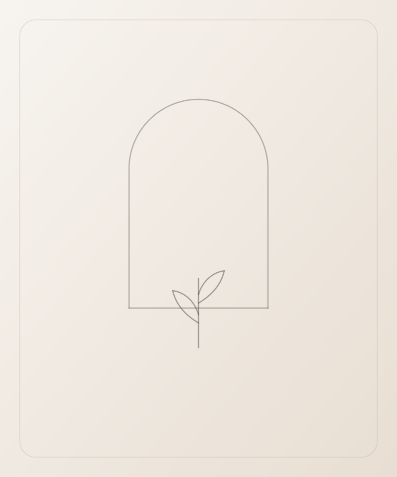
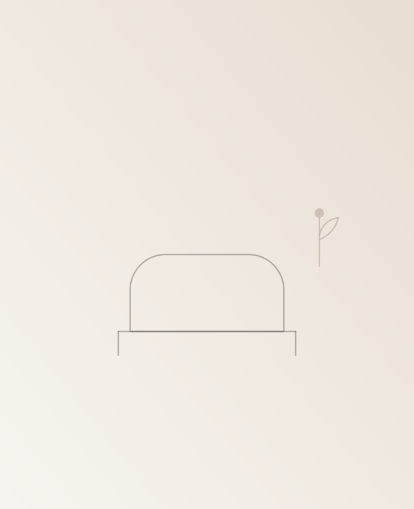
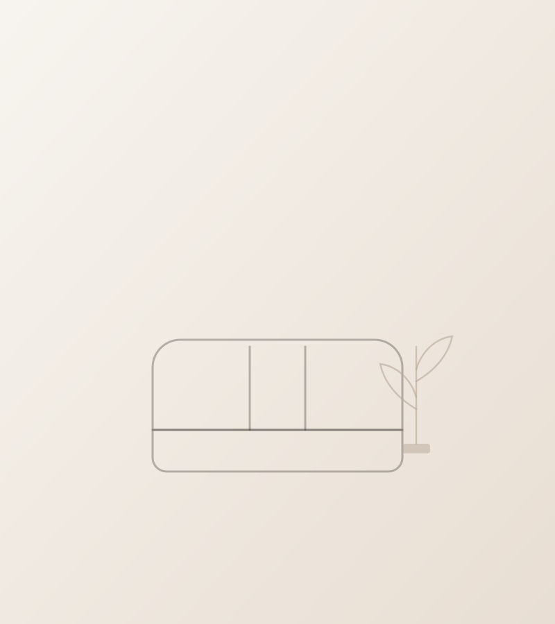
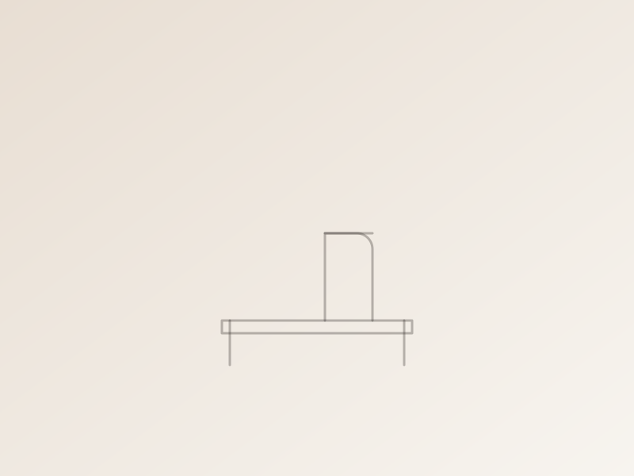
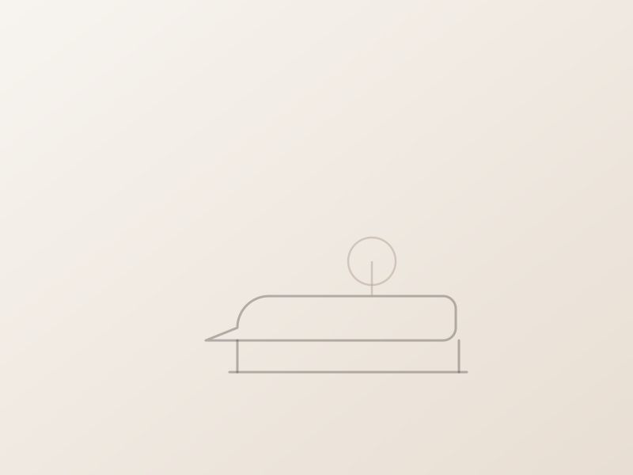

A clínica da Dra. Daniele Murga foi pensada como uma extensão do cuidado: um ambiente moderno, sofisticado e acolhedor, com espaço para o seu conforto e tranquilidade.

O cuidado não começa apenas durante a consulta ou o procedimento. O espaço da clínica foi pensado para oferecer conforto e tranquilidade, em salas destinadas a um atendimento mais pessoal e reservado.



Um ambiente pensado para proporcionar conforto desde a chegada.
Espaços planejados para uma experiência mais tranquila e reservada.
Uma estrutura preparada para os tratamentos realizados na clínica.
A atenção aos detalhes acompanha a experiência antes, durante e depois do atendimento.
“Tecnologia faz parte do cuidado, mas nunca substitui o olhar médico.”
A estrutura da clínica acompanha os tratamentos realizados, sempre a serviço de uma avaliação médica individual.
Av. Maria Teresa, 260
Ed. Unique, Salas 614 e 615
Campo Grande, Rio de Janeiro - RJ
CEP 23050-160
Agende sua consulta e venha viver essa experiência pessoalmente.
Agendar consulta